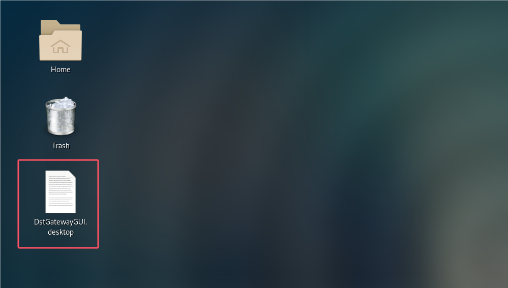

linux operation guide
install
centos
1.From the official website（ https://www.daodst.com/ ）Download program compressed file
2.Create/data directory permission (note:/data should be an independent hard drive with good read and write speeds, and the available space should be above 1000GB)
pkexec mkdir -p /data
Granting permissions
pkexec chown $USER:$USER /data
3.Right click on DST.zip and select "Open with Archive Manager" from the pop-up menu”
4.Click on 'Extract' in the upper left corner of the pop-up window
5.Choose /data, be careful not to select the wrong one
After clicking the extract button on the right, the program will automatically copy to this directory (the red box on the left indicates the selected installation location)
üì£ Note 1: The selected decompression path is/data, do not choose the wrong location
üì£ Note 2: Do not select the installation directory under the user's home directory
6.Enter the installation directory
7.Right click the mouse in the blank space of the window, and click "Open on Terminal" in the pop-up window to open the command line interface
8.Authorize and execute initialization commands in the command-line interface
pkexec chmod u+x /data/daodst/init.sh
pkexec /data/daodst/init.sh $USER
9.During the initialization process, it is necessary to enter the root user's password once for authorization operations
10.After the initialization script is executed
11.Restart the operating system
12.Open the terminal and switch to the root user (enter the root password after the su command). After successful switching, the root user will be displayed

13.Enter the backend directory of the gateway
cd /data/daodst/resources/gateway
14.Start the gateway backend program
./op.sh start
15.Enter the installation root directory or system desktop, double-click the icon "DstGatewayGUI. desktop" to start the gateway frontend 
16.Click on 'trust and Launch' to start (this prompt will only be displayed once)
17.matters needing attention
You need to start the gateway backend as root before starting the gateway frontend
Backend management
After the GUI installation is completed, you can operate the gateway backend as follows:
Start
#Switch to root user
su root
#Switch directories
cd {Installation directory}/resource/gateway
./op.sh start
Stop
#Switch to root user
su root
#Switch directories
cd {Installation directory}/resource/gateway
./op.sh stop
View status
#Switch to root user
su root
#Switch directories
cd {Installation directory}/resource/gateway
./op.sh status
process
Create or import wallet address --> create dpos --> create gateway --> pledge NXN --> receive rewards
new wallet

import wallet

create validator

create gateway

Pledge

Receive award

front page
The home page contains some global views and functions
These include:
View block synchronization (top right of the interface)

View task status (upper right corner of interface)

Management software settings (bottom left corner of the interface)

Actions
The Actions in the upper right corner can manage DID and modify gateway information

DID segment management
More DID numbers can be obtained by staking NXN

Select the line on the left side of the homepage, including two tabs for assets and gateways
Property
Asset interface management includes balance, transfer, transaction records, and account management
The three buttons on the left correspond to the three main coins of DST, NXN and HASH respectively

On the right side, you can view the balance quantity, transaction records, and send and receive the main currency

Here export the mnemonic and change the password

gateway
Gateway function management dpos pledge, gateway server, gateway app, gateway key, etc.

DPOS pledge management
After becoming a validator, you can check the DPOS status of this node on the _DPOS pledge management_ page
Available for pledge and redemption
The redemption of DPOS is not immediately received, check the redemption status here

Can view and claim staking rewards and commissions
Modify the settings of the gateway here

Gateway server resources

gateway app
gateway key
For details on how to use the gateway key, see
How to use the gateway key
Setting method
Settings include: version detection, language detection, history clearing settings, node settings, data directory settings, routing layer detection

upgrade
centos
If the system has an upgrade task, the interface will automatically pop up an upgrade window
Click to update and the latest app will be downloaded automatically
During the upgrade, you need to enter the password of the current user for authorization
After the upgrade is completed, the interface will exit automatically. At this time, double-click the dst gateway icon on the desktop and start it
After opening the program, if the display 「Wait for the GateWay program to start...」And so on, indicating the need Start the back-end program manually
Manual upgrade
Manual upgrade requires running commands as an administrator in the command window: ./gateway upgrade Perform a manual upgrade. If the gateway program is running, it will prompt to close the gateway and provide a command to exit the gateway: curl http://127.0.0.1:50321/soft/exit
The gateway will automatically exit after executing the exit command
Re execute upgrade command ./gateway upgrade The program will prompt for the current version number and upgrade version number. After checking, enter y to perform the upgrade operation
During the upgrade process, the download directory and URL address will be prompted
If upgrading encounters permission errors, please rerun the upgrade command in administrator mode
After the upgrade is completed, you will be prompted to enter the specified directory and perform the initialization operation again as an administrator. After completion, the program can be started normally